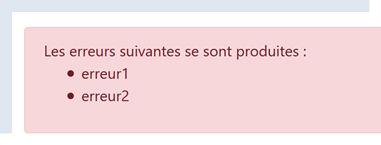
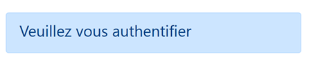
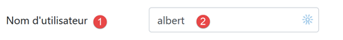
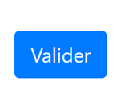
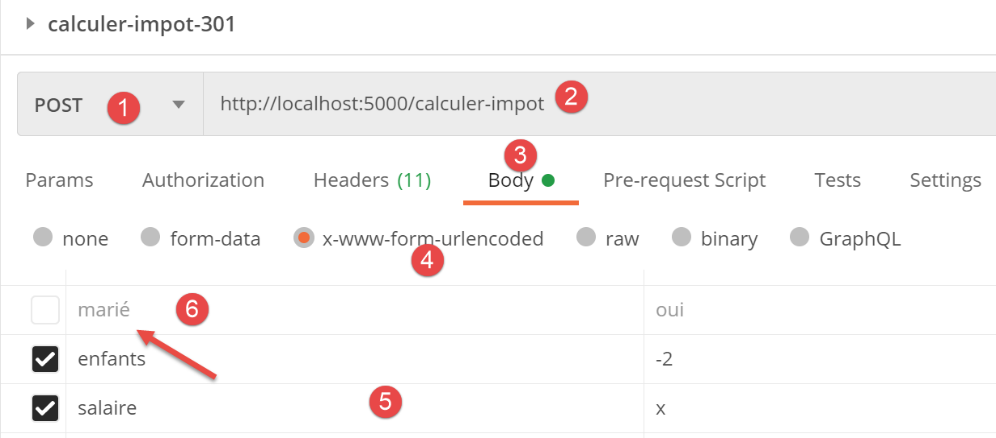
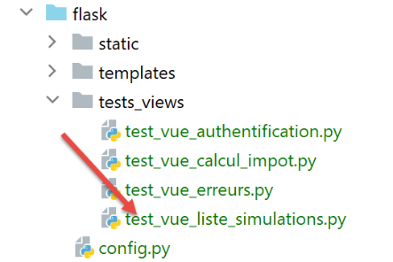
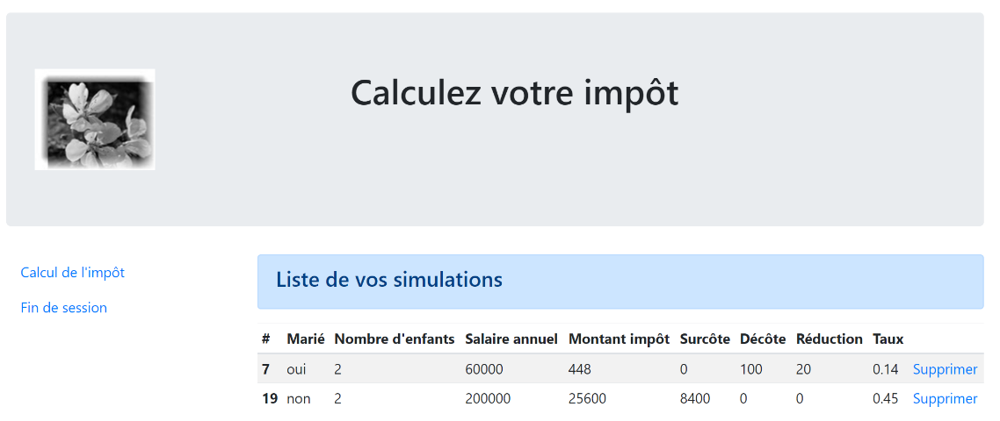
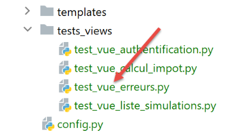
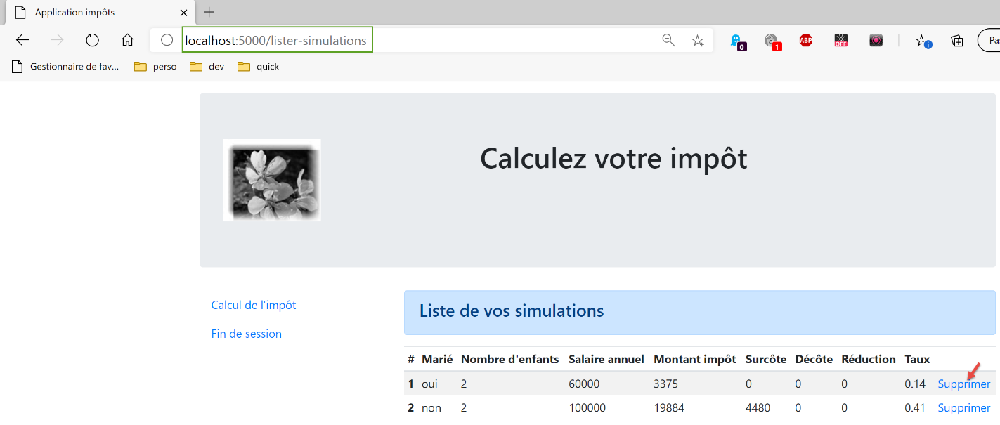

32. El modo HTML de la versión 12
Al inicio de la versión 12 habíamos indicado que íbamos a desarrollar la aplicación en varias etapas. Habíamos escrito:
- a partir de las vistas de la aplicación HTML, definiremos las acciones que debe implementar la aplicación web. Aquí utilizaremos las vistas reales, pero podrían ser simplemente vistas en papel;
- a partir de estas acciones, definiremos los URL de servicio de la aplicación HTML;
- implementaremos estos servicios URL con un servidor que entregue jSON. Esto permite definir la estructura del servidor web sin preocuparnos por las páginas HTML que se van a entregar. Probaremos estos servicios URL con Postman;
- luego probaremos nuestro servidor jSON con un cliente de consola;
- una vez que el servidor jSON haya sido validado, pasaremos a desarrollar la aplicación HTML;
Tenemos los servidores jSON y XML en funcionamiento. Ahora podemos pasar al servidor HTML. Veremos que este retoma toda la arquitectura desarrollada para los servidores jSON y XML, y les agrega una gestión de vistas HTML.
32.1. Arquitectura MVC
Implementaremos el modelo de arquitectura denominado MVC (Modelo – Vista – Controlador) de la siguiente manera:
El procesamiento de una solicitud de un cliente se llevará a cabo de la siguiente manera:
- 1 - solicitud
Los URL solicitados tendrán el formato http://machine:port/action/param1/param2/… El [Contrôleur principal] utilizará un archivo de configuración para «enrutar» la solicitud hacia el controlador adecuado. Para ello, utilizará el campo [action] del URL. El resto del URL y [param1/param2/…] está formado por parámetros opcionales que se transmitirán a la acción. La C de MVC es aquí la cadena [Contrôleur principal, Contrôleur / Action]. Si ningún controlador puede procesar la acción solicitada, el servidor web responderá que no se ha encontrado la acción solicitada.
- 2 - procesamiento
- La acción seleccionada [2a] puede utilizar los parámetros parami que le transmitió la acción [Contrôleur principal]. Estos pueden provenir de dos fuentes:
- la ruta [/param1/param2/…] de la acción URL,
- de parámetros enviados en el cuerpo de la solicitud del cliente;
- al procesar la solicitud del usuario, la acción puede requerir la capa [métier] [2b]. Una vez procesada la solicitud del cliente, esta puede generar diversas respuestas. Un ejemplo clásico es:
- una respuesta de error si la solicitud no se pudo procesar correctamente;
- una respuesta de confirmación en caso contrario;
- el [Contrôleur / Action] enviará su respuesta [2c] al controlador principal, junto con un código de estado. Estos códigos de estado representarán de manera única el estado en el que se encuentra la aplicación. Será un código de éxito o un código de error;
- 3 - respuesta
- dependiendo de si el cliente solicitó una respuesta jSON, XML o HTML, el [Contrôleur principal] instanciará [3a] con el tipo de respuesta adecuado y le pedirá que envíe la respuesta al cliente. El [Contrôleur principal] le transmitirá tanto la respuesta como el código de estado proporcionados por el [Contrôleur / Action] que se ejecutó;
- si la respuesta deseada es del tipo jSON o XML, la respuesta seleccionada dará formato a la respuesta del [Contrôleur / Action] que se le proporcionó y la enviará a [3c]. El cliente capaz de procesar esta respuesta puede ser un script de consola de Python o un script de JavaScript alojado en una página HTML;
- si la respuesta deseada es del tipo HTML, la respuesta seleccionada elegirá una de las vistas HTML o [Vuei] mediante el código de estado que se le haya proporcionado. Esta es la V de MVC. A cada código de estado le corresponde una sola vista. Esta vista V mostrará la respuesta del [Contrôleur / Action] que se ejecutó. Esta vista utiliza HTML, CSS y JavaScript para presentar los datos de dicha respuesta. A estos datos se les llama el modelo de la vista. Es la M de MVC. El cliente suele ser, en la mayoría de los casos, un navegador;
32.2. La estructura de los scripts del servidor HTML

- en [1], los elementos estáticos del servidor HTML;
- en [2-3], las vistas V del servidor HTML. Los fragmentos [2] son elementos reutilizables en las vistas [3];
- en [4], una carpeta que servirá para realizar pruebas estáticas de las vistas;
- en [5], la carpeta de las plantillas M de las vistas V, la M de MVC;
32.3. Presentación de las vistas
La aplicación web HTML utiliza cuatro vistas. La primera vista es la vista de autenticación:
- la acción que conduce a esta primera vista es la acción [/init-session] [1];
- al hacer clic en el botón [Valider] se activa la acción [/authentifier-utilisateur] con dos parámetros enviados por POST [2-3];
La vista del cálculo del impuesto:

- en [1], la acción [/authentifier-utilisateur] que muestra esta vista;
- en [2], al hacer clic en el botón [Valider] se activa la ejecución de la acción [/calculer-impot] con tres parámetros enviados: [2-5];
- Al hacer clic en el enlace [6] se activa la acción [/lister-simulations] sin parámetros;
- al hacer clic en el enlace [7] se activa la acción [/fin-session] sin parámetros;
La tercera vista muestra las simulaciones realizadas por el usuario autenticado:

- en [1], la acción [/lister-simulations] que lleva a esta vista;
- en [2], al hacer clic en el enlace [Supprimer] se activa la acción [/supprimer-simulation] con un parámetro: el número de la simulación que se eliminará de la lista;
- al hacer clic en el enlace [3] se activa la acción [/afficher-calcul-impot] sin parámetros, que vuelve a mostrar la vista del cálculo del impuesto;
- al hacer clic en el enlace [4] se activa la acción [/fin-session] sin parámetros;
La cuarta vista se llamará «vista de errores inesperados»:
- en [1]: el usuario ingresó él mismo el código URL. Sin embargo, en este ejemplo no había simulaciones. Por lo tanto, se recibe el mensaje de error [2]. Conocemos este mensaje. Ya lo habíamos visto en jSON / XML. A este tipo de error lo llamaremos «error inesperado», ya que no puede ocurrir durante el uso normal de la aplicación. Solo puede producirse cuando el usuario ingresa él mismo los códigos URL;

- en caso de un error inesperado, los enlaces [3-5] permiten regresar a una de las otras tres vistas;
Recordemos los diferentes URL de servicio del servidor jSON / XML:
Acción | Función | Contexto de ejecución |
/init-session | Sirve para establecer el tipo (json, xml, html) de las respuestas deseadas | Solicitud GET Se puede emitir en cualquier momento |
/autenticar-usuario | Autoriza o no a un usuario a iniciar sesión | Solicitud POST. La solicitud debe tener dos parámetros enviados por POST [user, password] Solo se puede emitir si se conoce el tipo de sesión (json, xml, html) |
/calcular-impuesto | Realiza una simulación del cálculo de impuestos | Solicitud POST. La solicitud debe incluir tres parámetros enviados por POST: [marié, enfants, salaire] Solo se puede emitir si se conoce el tipo de sesión (json, xml, html) y el usuario está autenticado |
/listar-simulaciones | Solicita ver la lista de simulaciones realizadas desde el inicio de la sesión | Solicitud GET. Solo se puede enviar si se conoce el tipo de sesión (json, xml, html) y el usuario está autenticado |
/eliminar-simulación/número | Elimina una simulación de la lista de simulaciones | Solicitud GET. Solo se puede enviar si se conoce el tipo de sesión (json, xml, html) y el usuario está autenticado |
/mostrar-cálculo-impuesto | Muestra la página HTML del cálculo de impuestos | Consulta GET. Solo se puede emitir si se conoce el tipo de sesión (json, xml, html) y el usuario está autenticado |
/fin-session | Finaliza la sesión de simulaciones. | Técnicamente, se elimina la sesión web anterior y se crea una nueva sesión Solo se puede emitir si se conoce el tipo de sesión (json, xml, html) y el usuario está autenticado |
Estos diferentes códigos de servicio URL también se utilizarán para el servidor HTML.
32.4. Configuración de las vistas
Una acción es procesada por un controlador. Este controlador devuelve una tupla (resultado, status_code) donde:
- [résultat] es un diccionario de claves [action, état, réponse];
- [status_code] es el código de estado de la respuesta HTTP que se enviará al cliente;
En una sesión HTML, la página que se muestra tras una acción depende del código de estado devuelto por el controlador. Esta dependencia se refleja en la configuración [config] de la siguiente manera:
# las vistas HTML y sus plantillas dependen del estado devuelto por el controlador
"views": [
{
# pantalla de autenticación
"états": [
# /inicio-de-sesión exitoso
700,
# /autenticar-usuario fallido
201
],
"view_name": "views/vue-authentification.html",
"model_for_view": ModelForAuthentificationView()
},
{
# vista del cálculo del impuesto
"états": [
# /autenticar-usuario correcto
200,
# /calcular-impuesto correcto
300,
# /calcular-impuesto fallido
301,
# /mostrar-cálculo-del-impuesto
800
],
"view_name": "views/vue-calcul-impot.html",
"model_for_view": ModelForCalculImpotView()
},
{
# vista de la lista de simulaciones
"états": [
# /listar-simulaciones
500,
# /eliminar-simulación
600
],
"view_name": "views/vue-liste-simulations.html",
"model_for_view": ModelForListeSimulationsView()
}
],
# vista de errores inesperados
"view-erreurs": {
"view_name": "views/vue-erreurs.html",
"model_for_view": ModelForErreursView()
},
# redirecciones
"redirections": [
{
"états": [
400, # /fin-de-sesión exitosa
],
# redirección a
"to": "/init-session/html",
}
],
}
- líneas 2-40: [views] es una lista de vistas. Analicemos la vista de las líneas 3-13:
- línea 11: la vista V que se muestra;
- línea 12: la instancia de clase encargada de generar el modelo M de esta vista;
- líneas 5-10: los estados que conducen a esta vista;
- líneas 3-13: la vista de autenticación;
- líneas 14-28: la vista de cálculo del impuesto;
- líneas 29-39: la vista de la lista de simulaciones;
- líneas 42-46: la vista de errores inesperados;
- líneas 49-57: algunos informes conducen a una vista mediante una redirección. Este es el caso del informe 400, que corresponde a la acción [/fin-session] realizada con éxito. En ese caso, se debe redirigir al cliente a la acción [http://machine:port/chemin/init-session/html];
A continuación, presentamos las diferentes vistas.
32.5. La vista de autenticación

32.5.1. Presentación de la vista
La vista de autenticación es la siguiente:

La vista se compone de dos elementos que llamaremos fragmentos:
- el fragmento [1] es generado por el fragmento [v-bandeau.html];
- el fragmento [2] es generado por el fragmento [v-authentification.html];
La vista de autenticación es generada por la siguiente página [vue-authentification.html]:
<!-- documento HTML -->
<!doctype html>
<html lang="fr">
<head>
<!-- Etiquetas meta requeridas -->
<meta charset="utf-8">
<meta name="viewport" content="width=device-width, initial-scale=1, shrink-to-fit=no">
<!-- Bootstrap CSS -->
<link rel="stylesheet" href="https://maxcdn.bootstrapcdn.com/bootstrap/4.4.1/css/bootstrap.min.css">
<title>Application impôts</title>
</head>
<body>
<div class="container">
<!-- cabecera -->
{% include "fragments/v-bandeau.html" %}
<!-- línea de dos columnas -->
<div class="row">
<div class="col-md-9">
{% include "fragments/v-authentification.html" %}
</div>
</div>
<!-- si hay un error, se muestra una alerta de error -->
{% if modèle.error %}
<div class="row">
<div class="col-md-9">
<div class="alert alert-danger" role="alert">
Les erreurs suivantes se sont produites :
<ul>{{modèle.erreurs|safe}}</ul>
</div>
</div>
</div>
{% endif %}
</div>
</body>
</html>
Comentarios
- línea 2: un documento HTML comienza con esta línea;
- líneas 3-36: la página HTML está encapsulada entre las etiquetas <html> </html>;
- líneas 4-11: encabezado (head) del documento HTML;
- línea 6: la etiqueta <meta charset> indica aquí que el documento está codificado en UTF-8;
- línea 7: la etiqueta <meta name=’viewport’> establece la visualización inicial de la vista: a lo ancho completo de la pantalla en la que se muestra (width) a su tamaño inicial (initial-scale) sin redimensionamiento para adaptarse a un tamaño de pantalla más pequeño (shrink-to-fit);
- línea 9: la etiqueta <link rel=’stylesheet’> especifica el archivo CSS que controla la apariencia de la vista. Aquí utilizamos el marco de trabajo CSS Bootstrap 4.4.1 [https://getbootstrap.com/docs/4.0/getting-started/introduction/] ;
- línea 10: la etiqueta <title> establece el título de la página:

- líneas 13-35: el cuerpo de la página web está encapsulado entre las etiquetas <body></body>;
- líneas 14-34: la etiqueta <div> delimita una sección de la página que se muestra. Todos los atributos [class] utilizados en la vista hacen referencia al marco de trabajo CSS Bootstrap. La etiqueta <div class=’container’> (línea 14) delimita un contenedor de Bootstrap;
- línea 26: se incluye el fragmento [v-bandeau.html]. Este fragmento genera el banner [1] de la página. Lo describiremos más adelante;
- líneas 18-22: la etiqueta <div class=’row’> delimita una fila de Bootstrap. Estas filas constan de 12 columnas;
- línea 19: la etiqueta <div class=’col-md-9’> delimita una sección de 9 columnas;
- línea 20: se incluye el fragmento [v-authentification.html], que muestra el formulario de autenticación [2] de la página. Lo describiremos más adelante;
- líneas 24-33: el código HTML de estas líneas solo se utiliza si [modèle.error] es True. Siempre procederemos de esta manera: el modelo de una vista HTML se encapsulará en un diccionario [modèle];
- líneas 24-33: la autenticación falla si el usuario ingresa datos de inicio de sesión incorrectos. En este caso, se vuelve a mostrar la vista de autenticación con un mensaje de error. El atributo [modèle.error] indica si se debe mostrar este mensaje de error;
- líneas 27-30: delimitan un área con fondo rosa (class="alert alert-danger") (línea 27);

- línea 28: un texto;
- línea 29: la etiqueta HTML <ul> (lista desordenada) muestra una lista con viñetas. Cada elemento de la lista debe tener la sintaxis <li>elemento</li>. Aquí se muestra el valor de [modèle.erreurs]. Este valor es filtrado (por la presencia de |) mediante el filtro [safe]. Por defecto, cuando se debe enviar una cadena de caracteres al navegador, Flask «neutraliza» todas las etiquetas HTML que puedan encontrarse en ella para que el navegador no las interprete. Pero a veces queremos que sí las interprete. Este será el caso cuando la cadena [modèle.erreurs] contenga las etiquetas HTML <li> y </li>, que sirven para delimitar un elemento de la lista. En este caso, se utiliza el filtro [safe], que le indica a Flask que la cadena que se va a mostrar es segura (safe) y que, por lo tanto, no debe neutralizar las etiquetas HTML que encuentre en ella;
De este código, recordemos los elementos dinámicos que hay que definir:
- [modèle.error]: para mostrar un mensaje de error;
- [modèle.erreurs]: una lista (en el sentido HTML del término) de mensajes de error;
32.5.2. El fragmento [v-bandeau.html]
El fragmento [v-bandeau.html] muestra la barra superior de todas las vistas de la aplicación web:

El código del fragmento [v-bandeau.html] es el siguiente:
<!-- Jumbotron de Bootstrap -->
<div class="jumbotron">
<div class="row">
<div class="col-md-4">
<img src="{{ url_for('static', filename='images/logo.jpg') }}" alt="Cerisier en fleurs"/>
</div>
<div class="col-md-8">
<h1>
Calculez votre impôt
</h1>
</div>
</div>
</div>
Comentarios
- líneas 2-13: la barra superior está encapsulada en una sección de Bootstrap de tipo Jumbotron [<div class="jumbotron">]. Esta clase de Bootstrap aplica un estilo particular al contenido mostrado para resaltarlo;
- líneas 3-12: una fila de Bootstrap;
- líneas 4-6: se coloca una imagen [img] en las primeras cuatro columnas de la línea;
- línea 5: la sintaxis:
utiliza la función [url_for] de Flask. Aquí, su valor será el URL del archivo [images/logo.pg] de la carpeta [static];
- líneas 7-11: las otras 8 columnas de la línea (recordemos que hay 12 en total) servirán para colocar un texto (línea 9) en letra grande (<h1>, líneas 8-10);
32.5.3. El fragmento [v-authentification.html]
El fragmento [v-authentification.html] muestra el formulario de autenticación de la aplicación web:

El código del fragmento [v-authentification.html] es el siguiente:
<!-- formulario HTML: se envían los valores mediante la acción [authentifier-utilisateur] -->
<form method="post" action="/authentifier-utilisateur">
<!-- título -->
<div class="alert alert-primary" role="alert">
<h4>Veuillez vous authentifier</h4>
</div>
<!-- formulario Bootstrap -->
<fieldset class="form-group">
<!-- primera línea -->
<div class="form-group row">
<!-- texto -->
<label for="user" class="col-md-3 col-form-label">Nom d'utilisateur</label>
<div class="col-md-4">
<!-- campo de texto -->
<input type="text" class="form-control" id="user" name="user"
placeholder="Nom d'utilisateur" value="{{ modèle.login }}" required>
</div>
</div>
<!-- segunda línea -->
<div class="form-group row">
<!-- etiqueta -->
<label for="password" class="col-md-3 col-form-label">Mot de passe</label>
<!-- campo de texto -->
<div class="col-md-4">
<input type="password" class="form-control" id="password" name="password"
placeholder="Mot de passe" required>
</div>
</div>
<!-- botón de tipo [submit] en una tercera línea -->
<div class="form-group row">
<div class="col-md-2">
<button type="submit" class="btn btn-primary">Valider</button>
</div>
</div>
</fieldset>
</form>
Comentarios
- líneas 2-39: la etiqueta <form> delimita un formulario HTML. Este suele tener las siguientes características:
- define campos de entrada (etiquetas <input> en las líneas 17 y 27;
- Cuenta con un botón de tipo [submit] (línea 34) que envía los valores ingresados al URL indicado en el atributo [action] de la etiqueta [form] (línea 2). El método HTTP utilizado para enviar la solicitud a este URL se especifica en el atributo [method] de la etiqueta [form] (línea 2);
- aquí, cuando el usuario haga clic en el botón [Valider] (línea 34), el navegador enviará (línea 2) los valores ingresados en el formulario a URL [/authentifier-utilisateur] (línea 2);
- los valores enviados son los que el usuario ingresó en los campos de las líneas 17 y 27. Se enviarán en el cuerpo de la solicitud HTTP que realizará el navegador en el formato [x-www-forl-urlencoded]. Los nombres de los parámetros [user, password] son los de los atributos [name] de los campos de entrada de las líneas 17 y 27;
- líneas 5-7: una sección de Bootstrap para mostrar un título sobre un fondo azul:
- líneas 10-37: un formulario de Bootstrap. Todos los elementos del formulario se aplicarán un estilo específico;

- líneas 12-20: definen la primera línea Bootstrap del formulario:

- la línea 14 define el texto [1] en tres columnas. El atributo [for] de la etiqueta [label] vincula el texto a la etiqueta [id] del campo de entrada de la línea 17;
- líneas 15-19: coloca el campo de entrada en un conjunto de cuatro columnas;
- líneas 17-18: la etiqueta HTML [input] describe un campo de entrada. Tiene varios parámetros:
- [type=’text’]: es un campo de entrada de texto. Se puede escribir cualquier cosa en él;
- [class=’form-control’]: estilo Bootstrap para el campo de entrada;
- [id=’user’]: identificador del campo de entrada. Este identificador suele ser utilizado por el CSS y el código JavaScript;
- [name=’user’]: nombre del campo de entrada. Es bajo este nombre que el navegador enviará el valor ingresado por el usuario;
- [placeholder=’invite’]: el texto que se muestra en el campo de entrada cuando el usuario aún no ha escrito nada;

- (continuación)
- [value=’valeur’]: el texto «valor» se mostrará en el campo de entrada tan pronto como este aparezca, es decir, antes de que el usuario ingrese cualquier otra cosa. Este mecanismo se utiliza en caso de error para mostrar la entrada que provocó el error. En este caso, ese valor será el de la variable [modèle.login];
- [required]: exige que el usuario ingrese un valor para que el formulario pueda enviarse al servidor:
- líneas 21-30: un código similar para la entrada de la contraseña;
- línea 27: [type=’password’] hace que haya un campo de texto (se puede escribir lo que sea), pero los caracteres escritos quedan ocultos:

- líneas 32-36: una tercera línea de Bootstrap para el botón [Valider];
- línea 34: debido a que tiene el atributo [type=submit], al hacer clic en este botón, el navegador envía al servidor los valores ingresados, tal como se explicó anteriormente. El atributo CSS [class="btn btn-primary"] muestra un botón azul:

Nos queda por explicar una última cosa. En la línea 2, el atributo [action="/authentifier-utilisateur"] define un URL incompleto (no comienza con http://machine:port/chemin). En nuestro ejemplo, todas las URL de la aplicación tienen la forma [http://machine:port/chemin/action/param1/param2/..], donde [http://machine:port/chemin] es la raíz de las URL de servicio. En [action="/authentifier-utilisateur"] tenemos un URL absoluto, es decir, medido a partir de la raíz de los URL. Por lo tanto, el URL completo del POST es [http://machine:port/chemin/authentifier-utilisateur], y es este el que utilizará el navegador.
Cabe destacar que este fragmento utiliza el modelo [modèle.login].
32.5.4. Pruebas visuales
Las vistas se pueden probar mucho antes de integrarlas en la aplicación. En este caso, se trata de probar su aspecto visual. Reuniremos todas las vistas de prueba en la carpeta [tests_views] del proyecto:

Para probar la vista V [vue-authentification.html], debemos crear el modelo de datos M que va a mostrar. Esto se hace con el script [test_vue_authentification.py]:
from flask import Flask, render_template, make_response
# aplicación Flask
app = Flask(__name__, template_folder="../templates", static_folder="../static")
# Inicio URL
@app.route('/')
def index():
# encapsulamos los datos de la página en una plantilla
modèle = {}
# identificador de usuario
modèle["login"] = "albert"
# lista de errores
modèle["error"] = True
erreurs = ["erreur1", "erreur2"]
# se genera una lista HTML de los errores
content = ""
for erreur in erreurs:
content += f"<li>{erreur}</li>"
modèle["erreurs"] = content
# visualización de la página
return make_response(render_template("views/vue-authentification.html", modèle=modèle))
# main
if __name__ == '__main__':
app.config.update(ENV="development", DEBUG=True)
app.run()
Comentarios
- líneas 1-3: creamos una aplicación Flask cuyo único propósito es mostrar la vista [vue-authentification.html] (línea 22);
- línea 7: la aplicación tiene un único servicio URL;
- líneas 9-20: la vista de autenticación tiene partes dinámicas controladas por el objeto [modèle]. A este objeto se le llama el modelo de la vista. Según una de las dos definiciones dadas para la sigla MVC, aquí tenemos la M de MVC. Al definir la vista [vue-authentification.html], habíamos identificado tres valores dinámicos:
- [modèle.error]: valor booleano que indica si se debe mostrar un mensaje de error;
- [modèle.erreurs]: una lista HTML de mensajes de error;
- [modèle.login]: el nombre de usuario;
Por lo tanto, debemos definir estos tres valores dinámicos.
- líneas 9-20: se definen los tres elementos dinámicos de la vista de autenticación;
Para realizar la prueba, ejecutamos el script [tests_views/test_vue_authentification.py] y solicitamos el URL [/localhost:5000/]:
Continuamos con estas pruebas visuales hasta estar satisfechos con el resultado.

32.5.5. Cálculo del modelo de la vista
Una vez determinado el aspecto visual de la vista, se puede proceder al cálculo del modelo de la vista en condiciones reales. Los modelos de las vistas serán generados por clases reunidas en la carpeta [models_for_views]:

Cada clase que genere un modelo de vista respetará la siguiente interfaz [InterfaceModelForView]:
from abc import ABC, abstractmethod
from flask import Request
from werkzeug.local import LocalProxy
class InterfaceModelForView(ABC):
@abstractmethod
def get_model_for_view(self, request: Request, session: LocalProxy, config: dict, résultat: dict) -> dict:
pass
- líneas 8-10: el método [get_model_for_view] se encarga de producir una plantilla de vista encapsulada en un diccionario. Para ello, recibe la siguiente información:
- [request, session, config] son los mismos parámetros utilizados por el controlador de la acción. Por lo tanto, también se transmiten al modelo;
- el controlador ha generado un resultado [résultat] que también se transmite al modelo. Este resultado contiene un elemento importante [état] que indica cómo se llevó a cabo la ejecución de la acción en curso. El modelo utilizará esta información;
Hemos visto que en la configuración [config] de la aplicación, los códigos de estado devueltos por los controladores se utilizan para designar la vista HTML que se debe mostrar:
# las vistas HTML y sus plantillas dependen del estado devuelto por el controlador
"views": [
{
# vista de autenticación
"états": [
# /iniciar-sesión exitosa
700,
# /autenticar-usuario fallido
201
],
"view_name": "views/vue-authentification.html",
"model_for_view": ModelForAuthentificationView()
},
{
# vista de cálculo del impuesto
"états": [
# /autenticar-usuario exitoso
200,
# /calcular-impuesto correcto
300,
# /calcular-impuesto fallido
301,
# /mostrar-cálculo-del-impuesto
800
],
"view_name": "views/vue-calcul-impot.html",
"model_for_view": ModelForCalculImpotView()
},
{
# vista de la lista de simulaciones
"états": [
# /listar-simulaciones
500,
# /eliminar-simulación
600
],
"view_name": "views/vue-liste-simulations.html",
"model_for_view": ModelForListeSimulationsView()
}
],
# vista de errores inesperados
"view-erreurs": {
"view_name": "views/vue-erreurs.html",
"model_for_view": ModelForErreursView()
},
# redirecciones
"redirections": [
{
"états": [
400, # /fin-de-sesión exitosa
],
# redirección a
"to": "/init-session/html",
}
],
}
Por lo tanto, son los códigos de estado [700, 201] (líneas 7 y 9) los que hacen que se muestre la vista de autenticación. Para conocer el significado de estos códigos, podemos consultar las pruebas [Postman] realizadas en la aplicación jSON:
- [init-session-json-700]: 700 es el código de estado al finalizar una acción [init-session] exitosa: en ese momento se muestra el formulario de autenticación en blanco;
- [authentifier-utilisateur-201]: 201 es el código de estado al finalizar una acción [authentifier-utilisateur] que ha fallado (datos de identificación no reconocidos): en ese caso, se muestra el formulario de autenticación para que se corrijan;
Ahora que sabemos en qué momentos debe mostrarse el formulario de autenticación, podemos calcular su plantilla en [ModelForAuthentificationView] (línea 12):
from flask import Request
from werkzeug.local import LocalProxy
from InterfaceModelForView import InterfaceModelForView
class ModelForAuthentificationView(InterfaceModelForView):
def get_model_for_view(self, request: Request, session: LocalProxy, config: dict, résultat: dict) -> dict:
# se encapsulan los datos de la página en la plantilla
modèle = {}
# estado de la aplicación
état = résultat["état"]
# la plantilla depende del estado
if état == 700:
# en el caso de que se muestre el formulario vacío
modèle["login"] = ""
# no hay ningún error que mostrar
modèle["error"] = False
elif état == 201:
# autenticación incorrecta
# se vuelve a mostrar el usuario ingresado inicialmente
modèle["login"] = request.form.get("user")
# hay un error que mostrar
modèle["error"] = True
# lista HTML de mensajes de error
erreurs = ""
for erreur in résultat["réponse"]:
erreurs += f"<li>{erreur}</li>"
modèle["erreurs"] = erreurs
# se devuelve la plantilla
return modèle
Comentarios
- línea 8: el método [get_model_for_view] de la vista de autenticación debe proporcionar un diccionario con tres claves [error, erreurs, login]. Este cálculo se realiza a partir del código de estado devuelto por el controlador de la acción;
- línea 12: se recupera el código de estado devuelto por el controlador que procesó la acción en curso;
- líneas 14-29: el modelo depende de este código de estado;
- líneas 15-18: caso en el que se debe mostrar un formulario de autenticación en blanco;
- líneas 20-29: caso de autenticación fallida: se muestra el nombre de usuario ingresado y se muestra un mensaje de error. El usuario puede entonces volver a intentar la autenticación;
- línea 22: el nombre de usuario ingresado inicialmente por el usuario se puede recuperar en la solicitud del cliente;
- línea 24: se indica que hay errores que mostrar;
- líneas 26-29: en caso de error, el resultado [‘réponse’] contiene una lista de errores;
32.5.6. Generación de respuestas HTML
Volvamos al modelo MVC de la aplicación HTML:
- en 2 (2a, 2b): el controlador ejecuta una acción;
- en 3 (3a, 3b, 3c): se selecciona una vista y se envía al cliente;
En [3a], se selecciona un tipo de respuesta (jSON, XML, HTML). Hemos visto cómo se generan las respuestas jSON y XML, pero aún no las respuestas HTML. Estas son generadas por la clase [HtmlResponse]:

Recordemos cómo en el script principal [main] se determina el tipo de respuesta que se debe dar al usuario:
….
# se genera la respuesta que se enviará
response_builder = config["responses"][type_response]
response, status_code = response_builder \
.build_http_response(request, session, config, status_code, résultat)
# se envía la respuesta
return response, status_code
donde, en la línea 3, config[‘responses’] es el siguiente diccionario:
# los diferentes tipos de respuesta (json, xml, html)
"responses": {
"json": JsonResponse(),
"html": HtmlResponse(),
"xml": XmlResponse()
},
Por lo tanto, es la clase [HtmlResponse] la que genera la respuesta HTML. Su código es el siguiente:
# diccionario de respuestas HTML según el estado incluido en el resultado
from flask import make_response, render_template
from flask.wrappers import Response
from werkzeug.local import LocalProxy
from InterfaceResponse import InterfaceResponse
class HtmlResponse(InterfaceResponse):
def build_http_response(self, request: LocalProxy, session: LocalProxy, config: dict, status_code: int,
résultat: dict) -> (Response, int):
# la respuesta HTML depende del código de estado devuelto por el controlador
état = résultat["état"]
# ¿Se debe realizar una redirección?
for redirection in config["redirections"]:
# Estados que requieren una redirección
états = redirection["états"]
if état in états:
# se debe realizar una redirección
return redirect(f"/{redirection['to']}"), status.HTTP_302_FOUND
# a cada estado le corresponde una vista
# se busca esta en la lista de vistas
views_configs = config["views"]
trouvé = False
i = 0
# se recorre la lista de vistas
nb_views = len(views_configs)
while not trouvé and i < nb_views:
# vista n.º i
view_config = views_configs[i]
# informes asociados a la vista n.º i
états = view_config["états"]
# ¿Se encuentra el informe buscado entre los informes asociados a la vista n.º i?
if état in états:
trouvé = True
else:
# siguiente vista
i += 1
# ¿Encontrado?
if not trouvé:
# si no existe ninguna vista para el estado actual de la aplicación
# se genera la vista de errores
view_config = config["view-erreurs"]
# se calcula la plantilla de la vista que se mostrará
model_for_view = view_config["model_for_view"]
modèle = model_for_view.get_model_for_view(request, session, config, résultat)
# se genera el código HTML de la respuesta
html = render_template(view_config["view_name"], modèle=modèle)
# se construye la respuesta HTTP
response = make_response(html)
response.headers['Content-Type'] = 'text/html; charset=utf-8'
# se devuelve el resultado
return response, status_code
- línea 11: el método [build_http_response], encargado de generar la respuesta HTML, recibe los siguientes parámetros:
- [request, session, dict]: estos son los parámetros que utiliza el controlador para procesar la acción en curso;
- [status_code, résultat] son los dos resultados generados por este mismo controlador;
- línea 14: como ya mencionamos, la respuesta HTML del servidor depende del código de estado contenido en el diccionario [résultat];
- líneas 16-22: primero se gestionan las redirecciones. Por ahora, vamos a ignorar este caso hasta que encontremos un ejemplo de redirección. Cabe señalar que las redirecciones son típicamente un caso de uso del servidor HTML. Este caso no se presenta con los servidores jSON ni ouXML;
- líneas 24-41: se busca entre las vistas aquella cuya lista [états] contenga el estado buscado;
- líneas 42-46: si no se ha encontrado ninguna vista, se trata de un error inesperado. Veamos un ejemplo. En el funcionamiento normal de la aplicación, la acción [/supprimer-simulation] nunca debe fallar. De hecho, veremos que esta eliminación de simulaciones se realiza a partir de enlaces generados por el código. Estos enlaces son correctos y no pueden provocar un error. Sin embargo, como ya vimos, el usuario puede escribir directamente URL [/supprimer-simulation/id] y, de este modo, provocar un error. En este caso, el controlador [SupprimerSimulationController] devuelve un código de estado 601. Sin embargo, este código de estado no se encuentra en la lista de códigos de estado que llevan a la visualización de una página HTML. Por lo tanto, se mostrará la vista de error. Está definida de la siguiente manera en la configuración:
# vista de los errores inesperados
"view-erreurs": {
"view_name": "views/vue-erreurs.html",
"model_for_view": ModelForErreursView()
},
- línea 49: una vez que sabemos qué vista se va a mostrar, recuperamos la clase que genera su modelo. Esta también se encuentra en la configuración [config];
- línea 50: una vez encontrada esta clase, se genera el modelo de la vista;
- línea 52: una vez calculado el modelo M de la vista V, se puede generar el código HTML de la vista;
- líneas 54-55: se construye la respuesta HTTP con un cuerpo HTML;
- líneas 56-57: se devuelve la respuesta HTTP con su código de estado;
32.5.7. Pruebas [Postman]
Vamos a ejecutar solicitudes que generen los códigos [700, 201], los cuales muestran la vista de autenticación:
- [init-session-html-700]: 700 es el código de estado al finalizar una acción [init-session] exitosa: entonces se muestra el formulario de autenticación en blanco;
- [authentifier-utilisateur-201]: 201 es el código de estado al finalizar una acción [authentifier-utilisateur] que falló (datos de identificación no reconocidos): en ese caso, se muestra el formulario de autenticación para que se corrijan;
Solo hay que volver a utilizarlos y comprobar si muestran correctamente la pantalla de autenticación. A continuación se muestran dos casos:
Caso 1: [init-session-html-700], inicio de una sesión HTML;

La respuesta es la siguiente:

- en [5], el modo [Preview] permite visualizar la página HTML recibida;
- en [6], se muestra el formulario vacío esperado;
- En [7], Postman no siguió el enlace de la imagen de la página;
- en [8], el modo [Raw] permite acceder al HTML recibido;

- en [3], el enlace que Postman no cargó. Mostró el valor del atributo [alt=alternative], que aparece cuando no se puede cargar la imagen. En este caso, más bien es que Postman no quiso cargarla. Esto se puede verificar solicitando el URL y el [http://localhost :5000/static/images.logo.jpg] con Postman:
Caso 2: [authentifier-utilisateur-201], autenticación incorrecta

Ahora, realicemos una autenticación incorrecta, después de haber completado con éxito la inicialización de la sesión HTML:

Arriba:
- en [4,7]: la solicitud envía la cadena [user=bernard&password=thibault];
La respuesta es la siguiente:

- en [4], se muestra un mensaje de error;
- en [3], se volvió a mostrar el usuario incorrecto;
32.5.8. Conclusión
Pudimos probar la vista [vue-authentification.html] sin haber escrito las otras vistas. Esto fue posible porque:
- todos los controladores están escritos;
- [Postman] nos permite enviar solicitudes al servidor sin necesidad de todas las vistas. Al escribir los controladores, hay que estar preparado para manejar solicitudes que ninguna vista permitiría. Nunca se debe asumir a priori que «esta solicitud es imposible». Hay que verificarlo;
32.6. La vista de cálculo del impuesto

32.6.1. Presentación de la vista
La vista de cálculo del impuesto es la siguiente:

La vista tiene tres partes:
- 1: la barra superior es generada por el fragmento [v-bandeau.html], ya presentado;
- 2: el formulario de cálculo del impuesto generado por el fragmento [v-calcul-impot.html];
- 3: un menú con dos enlaces, generado por el fragmento [v-menu.html];
La vista de cálculo del impuesto se genera mediante el siguiente código [vue-calcul-impot.html]:
<!-- documento HTML -->
<!doctype html>
<html lang="fr">
<head>
<!-- Etiquetas meta requeridas -->
<meta charset="utf-8">
<meta name="viewport" content="width=device-width, initial-scale=1, shrink-to-fit=no">
<!-- Bootstrap CSS -->
<link rel="stylesheet" href="https://maxcdn.bootstrapcdn.com/bootstrap/4.4.1/css/bootstrap.min.css">
<title>Application impôts</title>
</head>
<body>
<div class="container">
<!-- cabecera -->
{% include "fragments/v-bandeau.html" %}
<!-- diseño de dos columnas -->
<div class="row">
<!-- el menú -->
<div class="col-md-3">
{% include "fragments/v-menu.html" %}
</div>
<!-- el formulario de cálculo -->
<div class="col-md-9">
{% include "fragments/v-calcul-impot.html" %}
</div>
</div>
<!-- caso de éxito -->
{% if modèle.success %}
<!-- se muestra una alerta de éxito -->
<div class="row">
<div class="col-md-3">
</div>
<div class="col-md-9">
<div class="alert alert-success" role="alert">
{{modèle.impôt}}</br>
{{modèle.décôte}}</br>
{{modèle.réduction}}</br>
{{modèle.surcôte}}</br>
{{modèle.taux}}</br>
</div>
</div>
</div>
{% endif %}
{% if modèle.error %}
<!-- lista de errores en 9 columnas -->
<div class="row">
<div class="col-md-3">
</div>
<div class="col-md-9">
<div class="alert alert-danger" role="alert">
Les erreurs suivantes se sont produites :
<ul>{{modèle.erreurs | safe}}</ul>
</div>
</div>
</div>
{% endif %}
</div>
</body>
</html>
Comentarios
- solo comentamos las novedades que aún no se han encontrado;
- línea 16: inclusión de la barra superior de la vista en la primera línea de Bootstrap de la vista;
- línea 21: inclusión del menú que ocupará tres columnas de la segunda fila de Bootstrap de la vista (líneas 18, 20);
- línea 25: inclusión del formulario de cálculo de impuestos que ocupará nueve columnas (línea 24) de la segunda fila de Bootstrap de la vista (línea 18);
- líneas 30-46: si el cálculo del impuesto se realiza correctamente ([modèle.success=True]), entonces el resultado del cálculo del impuesto se muestra en un cuadro verde (líneas 37-43). Este cuadro se encuentra en la tercera fila Bootstrap de la vista (línea 32) y ocupa nueve columnas (línea 36) a la derecha de tres columnas vacías (líneas 33-35). Por lo tanto, este cuadro estará debajo del formulario de cálculo de impuestos;
- líneas 48-61: si falla el cálculo del impuesto [modèle.error=True], entonces se muestra un mensaje de error en un cuadro rosa (líneas 55-58). Este cuadro se encuentra en la tercera línea de Bootstrap de la vista (línea 50) y ocupa nueve columnas (línea 54) a la derecha de tres columnas vacías (líneas 51-53). Por lo tanto, este cuadro también estará debajo del formulario de cálculo del impuesto;
32.6.2. El fragmento [v-calcul-impot.html]
El fragmento [v-calcul-impot.html] muestra el formulario de cálculo de impuestos de la aplicación web:
El código del fragmento [v-calcul-impot.html] es el siguiente:

<!-- formulario HTML enviado -->
<form method="post" action="/calculer-impot">
<!-- mensaje en 12 columnas sobre fondo azul -->
<div class="col-md-12">
<div class="alert alert-primary" role="alert">
<h4>Remplissez le formulaire ci-dessous puis validez-le</h4>
</div>
</div>
<!-- elementos del formulario -->
<fieldset class="form-group">
<!-- primera línea en 9 columnas -->
<div class="row">
<!-- texto en 4 columnas -->
<legend class="col-form-label col-md-4 pt-0">Etes-vous marié(e) ou pacsé(e)?</legend>
<!-- botones de opción en 5 columnas-->
<div class="col-md-5">
<div class="form-check">
<input class="form-check-input" type="radio" name="marié" id="gridRadios1" value="oui" {{modèle.checkedOui}}>
<label class="form-check-label" for="gridRadios1">
Oui
</label>
</div>
<div class="form-check">
<input class="form-check-input" type="radio" name="marié" id="gridRadios2" value="non" {{modèle.checkedNon}}>
<label class="form-check-label" for="gridRadios2">
Non
</label>
</div>
</div>
</div>
<!-- segunda fila de 9 columnas -->
<div class="form-group row">
<!-- texto en 4 columnas -->
<label for="enfants" class="col-md-4 col-form-label">Nombre d'enfants à charge</label>
<!-- campo de entrada numérica para el número de hijos en 5 columnas -->
<div class="col-md-5">
<input type="number" min="0" step="1" class="form-control" id="enfants" name="enfants" placeholder="Nombre d'enfants à charge" value="{{modèle.enfants}}" required>
</div>
</div>
<!-- tercera línea de 9 columnas -->
<div class="form-group row">
<!-- texto en 4 columnas -->
<label for="salaire" class="col-md-4 col-form-label">Salaire annuel net imposable</label>
<!-- campo de entrada numérica para el salario en 5 columnas -->
<div class="col-md-5">
<input type="number" min="0" step="1" class="form-control" id="salaire" name="salaire" placeholder="Salaire annuel net imposable" aria-describedby="salaireHelp" value="{{modèle.salaire}}" required>
<small id="salaireHelp" class="form-text text-muted">Arrondissez à l'euro inférieur</small>
</div>
</div>
<!-- cuarta línea, botón [submit] en 5 columnas -->
<div class="form-group row">
<div class="col-md-5">
<button type="submit" class="btn btn-primary">Valider</button>
</div>
</div>
</fieldset>
</form>
Comentarios
- línea 2: el formulario HTML se enviará (atributo [method]) a URL [/calculer-impot] (atributo [action]). Los valores transferidos serán los valores de los campos de entrada:
- el valor del botón de opción seleccionado en el formato:
- [marié=oui] si el botón de opción [Oui] está marcado (líneas 17-22). [marié] es el valor del atributo [name] de la línea 18, [oui] es el valor del atributo [value] de la línea 18;
- [marié=non] si el botón de opción [Non] está marcado (líneas 23-28). [marié] es el valor del atributo [name] de la línea 24, [non] es el valor del atributo [value] de la línea 24;
- el valor del campo de entrada numérico de la línea 37 en el formato [enfants=xx], donde [enfants] es el valor del atributo [name] de la línea 37, y [xx] es el valor ingresado por el usuario mediante el teclado;
- el valor del campo de entrada numérico de la línea 46 en el formato [salaire=xx], donde [salaire] es el valor del atributo [name] de la línea 46, y [xx] es el valor ingresado por el usuario mediante el teclado;
Finalmente, el valor publicado tendrá la forma [marié=xx&enfants=yy&salaire=zz].
- (continuación)
- los valores ingresados se publicarán cuando el usuario haga clic en el botón de tipo [submit] de la línea 53;
- líneas 16-30: los dos botones de opción:

Los dos botones de opción forman parte del mismo grupo de botones de opción, ya que tienen el mismo atributo [name] (líneas 18, 24). El navegador se asegura de que, en un grupo de botones de opción, solo uno esté marcado en un momento dado. Por lo tanto, al hacer clic en uno, se desmarca el que estaba marcado anteriormente;
- son botones de opción debido al atributo [type="radio"] (líneas 18, 24);
- al mostrar el formulario (antes de ingresar datos), uno de los botones de radio deberá estar marcado: para ello, basta con agregar el atributo [checked=’checked’] a la etiqueta <input type="radio"> correspondiente. Esto se logra con variables dinámicas:
- [modèle.checkedOui] en la línea 18;
- [modèle->checkedNon] en la línea 24;
Estas variables formarán parte de la plantilla de la vista.
- línea 37: un campo de entrada numérico [type="number"] con un valor mínimo de 0 [min="0"]. En los navegadores recientes, esto significa que el usuario solo podrá ingresar un número >=0. En esos mismos navegadores recientes, la entrada se puede realizar mediante un control deslizante en el que se puede hacer clic para aumentar o disminuir el valor. El atributo [step="1"] de la línea 37 indica que el controlador funcionará con incrementos de 1 unidad. Esto implica que el controlador solo aceptará valores enteros que vayan de 0 a n con un incremento de 1. Para la entrada manual, esto significa que no se aceptarán números con decimales;
- línea 37: en ciertas visualizaciones, el campo de entrada de los hijos deberá estar prellenado con la última entrada realizada en ese campo. Para ello se utiliza el atributo [value], que establece el valor que se mostrará en el campo de entrada. Este valor será dinámico y se generará mediante la variable [modèle.enfants];

- línea 37: el atributo [required] obliga al usuario a ingresar un dato para que el formulario sea validado;
- línea 46: las explicaciones para la entrada del salario son las mismas que para la de los hijos;
- línea 53: el botón de tipo [submit] que activa el POST con los valores ingresados en el URL y el [/calculer-impot] (línea 2);

32.6.3. El fragmento [v-menu.html]
Este fragmento muestra un menú a la izquierda del formulario de cálculo del impuesto:

El código de este fragmento es el siguiente:
<!-- menú Bootstrap -->
<nav class="nav flex-column">
<!-- visualización de una lista de enlaces HTML -->
{% for optionMenu in modèle.optionsMenu %}
<a class="nav-link" href="{{optionMenu.url}}">{{optionMenu.text}}</a>
{% endfor %}
</nav>
Comentarios
- líneas 2-7: la etiqueta HTML [nav] enmarca una parte del documento HTML que presenta enlaces de navegación hacia otros documentos;
- línea 5: la etiqueta HTML [a] introduce un enlace de navegación:
- [optionMenu.url]: es el URL al que se navega al hacer clic en el enlace [optionMenu.text]. En ese momento, el navegador realiza una operación [GET optionMenu.url]. [optionMenu.url] será una URL absoluta medida a partir de la raíz [http://machine :port/chemin] de la aplicación. Así, en [1], se creará el enlace:
- línea 5: la plantilla [modèle.optionsMenu] del fragmento será una lista con el siguiente formato:
- líneas 2, 7: las clases CSS y [nav, flex-column, nav-link] son clases de Bootstrap que definen la apariencia del menú;
32.6.4. Prueba visual
Reunimos estos diferentes elementos en la carpeta [Tests] y creamos una plantilla de prueba para la vista [vue-calcul-impot.html]:

El script de prueba [test_vue_calcul_impot] será el siguiente:
from flask import Flask, render_template, make_response
# aplicación Flask
app = Flask(__name__, template_folder="../templates", static_folder="../static")
# Inicio URL
@app.route('/')
def index():
# encapsulamos los datos de la página en una plantilla
modèle = {}
# formulario
modèle["checkedOui"] = ""
modèle["checkedNon"] = 'checked="checked"'
modèle["enfants"] = 2
modèle["salaire"] = 300000
# mensaje de éxito
modèle["success"] = True
modèle["impôt"] = "Montant de l'impôt : 1000 euros"
modèle["décôte"] = "Décôte : 15 euros"
modèle["réduction"] = "Réduction : 20 euros"
modèle["surcôte"] = "Surcôte : 0 euros"
modèle["taux"] = "Taux d'imposition : 14 %"
# mensaje de error
modèle["error"] = True
erreurs = ["erreur1", "erreur2"]
# se genera una lista HTML de los errores
content = ""
for erreur in erreurs:
content += f"<li>{erreur}</li>"
modèle["erreurs"] = content
# menú
modèle["optionsMenu"] = [
{"text": 'Liste des simulations', "url": '/lister-simulations'},
{"text": 'Fin de session', "url": '/fin-session'}]
# visualización de la página
return make_response(render_template("views/vue-calcul-impot.html", modèle=modèle))
# página principal
if __name__ == '__main__':
app.config.update(ENV="development", DEBUG=True)
app.run()
Comentarios
- líneas 9-34: se inicializan todas las partes dinámicas de la vista [vue-calcul-impot.html] y de los fragmentos [v-calcul-impot.html] y [v-menu.html];
- línea 36: se muestra la vista [vue-calcul-impot.html];
Al ejecutar el script de prueba [test_vue_calcul_impot], se obtiene el siguiente resultado:
Se trabaja en esta vista hasta que el resultado visual nos satisfaga. Luego se puede pasar a integrar la vista en la aplicación web que se está desarrollando.

32.6.5. Cálculo del modelo de la vista
Una vez determinado el aspecto visual de la vista, podemos proceder al cálculo del modelo de la vista en condiciones reales. Recordemos los códigos de estado que conducen a esta vista. Se encuentran en el archivo de configuración:
{
# vista del cálculo del impuesto
"états": [
# /autenticar-usuario éxito
200,
# /calcular-impuesto exitoso
300,
# /calcular-impuesto error
301,
# /mostrar-cálculo-del-impuesto
800
],
"view_name": "views/vue-calcul-impot.html",
"model_for_view": ModelForCalculImpotView()
},
Por lo tanto, son los códigos de estado [200, 300, 301, 800] los que hacen que se muestre la vista de cálculo del impuesto. Para conocer el significado de estos códigos, podemos recurrir a las pruebas [Postman] realizadas en la aplicación jSON:
- [authentifier-utilisateur-200]: 200 es el código de estado al finalizar una acción [authentifier-utilisateur] exitosa: en ese momento se muestra el formulario de cálculo de impuestos en blanco;
- [calculer-impot-300]: 300 es el código de estado al finalizar con éxito una acción [calculer-impot]. A continuación, se muestra el formulario de cálculo con los datos que se han ingresado y el monto del impuesto. El usuario puede entonces realizar otro cálculo;
- El código de estado [301] es el que se obtiene cuando hay un error en el cálculo del impuesto;
- el código de estado [800] se presentará más adelante. Aún no lo hemos encontrado;
Ahora que sabemos en qué momentos debe mostrarse el formulario de cálculo del impuesto, podemos diseñar su plantilla en la clase [ModelForCalculImpotView]:

from flask import Request
from werkzeug.local import LocalProxy
from InterfaceModelForView import InterfaceModelForView
class ModelForCalculImpotView(InterfaceModelForView):
def get_model_for_view(self, request: Request, session: LocalProxy, config: dict, résultat: dict) -> dict:
# se encapsulan los datos de la vista en la plantilla
modèle = {}
# estado de la aplicación
état = résultat["état"]
# el modelo depende del estado
if état in [200, 800]:
# visualización inicial de un formulario en blanco
modèle["success"] = False
modèle["error"] = False
modèle["checkedNon"] = 'checked="checked"'
modèle["checkedOui"] = ""
modèle["enfants"] = ""
modèle["salaire"] = ""
elif état == 300:
# cálculo exitoso: visualización del resultado
modèle["success"] = True
modèle["error"] = False
modèle["impôt"] = f"Montant de l'impôt : {résultat['réponse']['impôt']} euros"
modèle["décôte"] = f'Décôte : {résultat["réponse"]["décôte"]} euros'
modèle["réduction"] = f"Réduction : {résultat['réponse']['réduction']} euros"
modèle["surcôte"] = f'Surcôte : {résultat["réponse"]["surcôte"]} euros'
modèle["taux"] = f"Taux d'imposition : {résultat['réponse']['taux'] * 100} %"
# formulario restablecido con los valores ingresados
modèle["checkedOui"] = 'checked="checked"' if request.form.get("marié") == "oui" else ""
modèle["checkedNon"] = 'checked="checked"' if request.form.get("marié") == "non" else ""
modèle["enfants"] = request.form.get("enfants")
modèle["salaire"] = request.form.get("salaire")
elif état == 301:
# se produjo un error: formulario restablecido con los valores ingresados
modèle["checkedOui"] = 'checked="checked"' if request.form.get("marié") == "oui" else ""
modèle["checkedNon"] = 'checked="checked"' if request.form.get("marié") == "non" else ""
modèle["enfants"] = request.form.get("enfants")
modèle["salaire"] = request.form.get("salaire")
# error
modèle["success"] = False
modèle["error"] = True
modèle["erreurs"] = ""
for erreur in résultat['réponse']:
modèle['erreurs'] += f"<li>{erreur}</li>"
# opciones del menú
modèle["optionsMenu"] = [
{"text": 'Liste des simulations', "url": '/lister-simulations'},
{"text": 'Fin de session', "url": '/fin-session'}]
# se devuelve la plantilla
return modèle
Comentarios
- línea 12: la vista que se mostrará depende del código de estado devuelto por el controlador;
- líneas 14-21: se muestra un formulario en blanco;
- líneas 22-35: caso en el que el cálculo del impuesto se realiza correctamente. Se vuelven a mostrar los valores ingresados, así como el monto del impuesto;
- líneas 36-47: caso en el que falla el cálculo del impuesto;
- líneas 49-52: cálculo de las dos opciones del menú;
32.6.6. Pruebas [Postman]
Se inicia una sesión HTML con la consulta [init-session-html-700] y luego se realiza la autenticación con la consulta [authentifier-utilisateur-200]. A continuación, utilizamos la siguiente consulta [calculer-impot-300]:
La respuesta del servidor es la siguiente:


Ahora probemos la siguiente solicitud [calculer-impot-301]:

La respuesta del servidor es la siguiente:
Ahora probemos un caso inesperado, aquel en el que faltan parámetros en la consulta POST. Este caso no es posible en el funcionamiento normal de la aplicación. Pero cualquiera puede «armar» una consulta HTTP como lo estamos haciendo ahora:


- en [6], hemos desmarcado el parámetro enviado en [marié];
La respuesta del servidor es la siguiente:

- a [3], el mensaje de error del servidor;
En esta aplicación, teníamos la opción de elegir. Podíamos asignarle a este caso de error un código de estado que redirigiera a la página de errores inesperados. En esta aplicación, elegimos dos códigos de estado para cada controlador:
- [xx0]: para un resultado exitoso;
- [xx1]: para un error;
En los casos de fracaso, podemos diversificar los códigos de estado para lograr una gestión más detallada de los errores. Por ejemplo, podríamos haber tenido:
- [xx1]: para errores que deben mostrarse en la página que provocó el error;
- [xx2]: para errores inesperados durante el uso normal de la aplicación;
32.7. La vista de la lista de simulaciones

32.7.1. Presentación de la vista
La vista que muestra la lista de simulaciones es la siguiente:

La vista generada por el código [vue-liste-simulations.html] tiene tres partes:
- 1: la barra superior es generada por el fragmento [v-bandeau.html] ya presentado;
- 3: la tabla de simulaciones generada por el fragmento [v-liste-simulations.html];
- 2: un menú con dos enlaces, generado por el fragmento [v-menu.html] ya presentado;
La vista de las simulaciones se genera mediante el siguiente código [vue-liste-simulations.html]:
<!-- documento HTML -->
<!doctype html>
<html lang="fr">
<head>
<!-- Etiquetas meta requeridas -->
<meta charset="utf-8">
<meta name="viewport" content="width=device-width, initial-scale=1, shrink-to-fit=no">
<!-- Bootstrap CSS -->
<link rel="stylesheet" href="https://maxcdn.bootstrapcdn.com/bootstrap/4.4.1/css/bootstrap.min.css">
<title>Application impôts</title>
</head>
<body>
<div class="container">
<!-- cabecera -->
{% include "fragments/v-bandeau.html" %}
<!-- línea de dos columnas -->
<div class="row">
<!-- menú de tres columnas-->
<div class="col-md-3">
{% include "fragments/v-menu.html" %}
</div>
<!-- lista de simulaciones en 9 columnas-->
<div class="col-md-9">
{% include "fragments/v-liste-simulations.html" %}
</div>
</div>
</div>
</body>
</html>
Comentarios
- línea 16: inclusión de la barra de la aplicación [1];
- línea 21: inclusión del menú [2]. Se mostrará en tres columnas debajo del banner;
- línea 26: inclusión de la tabla de simulaciones [3]. Se mostrará en nueve columnas debajo del banner y a la derecha del menú;
Ya hemos comentado dos de los tres fragmentos de esta vista:
- [v-bandeau.html]: en el párrafo del enlace;
- [v-menu.html]: en el párrafo del enlace;
El fragmento [v-liste-simulations.html] es el siguiente:
{% if modèle.simulations is undefined or modèle.simulations|length==0 %}
<!-- mensaje sobre fondo azul -->
<div class="alert alert-primary" role="alert">
<h4>Votre liste de simulations est vide</h4>
</div>
{% endif %}
{% if modèle.simulations is defined and modèle.simulations|length!=0 %}
<!-- mensaje con fondo azul -->
<div class="alert alert-primary" role="alert">
<h4>Liste de vos simulations</h4>
</div>
<!-- tabla de simulaciones -->
<table class="table table-sm table-hover table-striped">
<!-- encabezados de las seis columnas de la tabla -->
<thead>
<tr>
<th scope="col">#</th>
<th scope="col">Marié</th>
<th scope="col">Nombre d'enfants</th>
<th scope="col">Salaire annuel</th>
<th scope="col">Montant impôt</th>
<th scope="col">Surcôte</th>
<th scope="col">Décôte</th>
<th scope="col">Réduction</th>
<th scope="col">Taux</th>
<th scope="col"></th>
</tr>
</thead>
<!-- cuerpo de la tabla (datos mostrados) -->
<tbody>
<!-- se muestra cada simulación al recorrer la tabla de simulaciones -->
{% for simulation in modèle.simulations %}
<!-- visualización de una fila de la tabla con 6 columnas - etiqueta <tr> -->
<!-- columna 1: encabezado de fila (n.º de simulación) — etiqueta <th scope='row' -->
<!-- columna 2: valor del parámetro [marié] - etiqueta <td> -->
<!-- columna 3: valor del parámetro [enfants] - etiqueta <td> -->
<!-- columna 4: valor del parámetro [salaire] - etiqueta <td> -->
<!-- columna 5: valor del parámetro [impôt] (del impuesto) - etiqueta <td> -->
<!-- columna 6: valor del parámetro [surcôte] - etiqueta <td> -->
<!-- columna 7: valor del parámetro [décôte] - etiqueta <td> -->
<!-- columna 8: valor del parámetro [réduction] - etiqueta <td> -->
<!-- columna 9: valor del parámetro [taux] (del impuesto) - etiqueta <td> -->
<!-- columna 10: enlace para eliminar la simulación - etiqueta <td> -->
<tr>
<th scope="row">{{simulation.id}}</th>
<td>{{simulation.marié}}</td>
<td>{{simulation.enfants}}</td>
<td>{{simulation.salaire}}</td>
<td>{{simulation.impôt}}</td>
<td>{{simulation.surcôte}}</td>
<td>{{simulation.décôte}}</td>
<td>{{simulation.réduction}}</td>
<td>{{simulation.taux}}</td>
<td><a href="/supprimer-simulation/{{simulation.id}}">Supprimer</a></td>
</tr>
{% endfor %}
</tr>
</tbody>
</table>
{% endif %}
Comentarios
- una tabla HTML se crea con la etiqueta <table> (líneas 15 y 62);
- los encabezados de las columnas de la tabla se definen dentro de una etiqueta <thead> (encabezado de tabla, líneas 17 y 30). La etiqueta <tr> (fila de tabla, líneas 18 y 29) delimita una fila. En las líneas 19 a 28, la etiqueta <th> (encabezado de columna) define un encabezado de columna. Por lo tanto, hay diez. [scope="col"] indica que el encabezado se aplica a la columna. [scope="row"] indica que el encabezado se aplica a la fila;
- líneas 32-61: la etiqueta <tbody> enmarca los datos que muestra la tabla;
- líneas 47-58: la etiqueta <tr> enmarca una fila de la tabla;
- línea 48: la etiqueta <th scope=’row’> define el encabezado de la fila. El navegador resalta este encabezado;
- líneas 49-57: cada etiqueta <td> (datos de la tabla) define una columna de la fila;
- línea 34: la lista de simulaciones se encuentra en la plantilla [modèle.simulations], que es una lista de diccionarios;
- línea 57: un enlace para eliminar la simulación. El modelo URL utiliza el número de la simulación que se muestra en la línea;
32.7.2. Prueba visual
Creamos un script de prueba para la vista [vue-liste-simulations.html]:
El script [test_vue_liste_simulations] es el siguiente:

from flask import Flask, make_response, render_template
# aplicación Flask
app = Flask(__name__, template_folder="../templates", static_folder="../static")
# Inicio URL
@app.route('/')
def index():
# encapsulamos los datos de la página en una plantilla
modèle = {}
# se adaptan las simulaciones al formato que espera la página
modèle["simulations"] = [
{
"id": 7,
"marié": "oui",
"enfants": 2,
"salaire": 60000,
"impôt": 448,
"décôte": 100,
"réduction": 20,
"surcôte": 0,
"taux": 0.14
},
{
"id": 19,
"marié": "non",
"enfants": 2,
"salaire": 200000,
"impôt": 25600,
"décôte": 0,
"réduction": 0,
"surcôte": 8400,
"taux": 0.45
}
]
# menú
modèle["optionsMenu"] = [
{"text": "Calcul de l'impôt", "url": '/afficher-calcul-impot'},
{"text": 'Fin de session', "url": '/fin-session'}]
# visualización de la página
return make_response(render_template("views/vue-liste-simulations.html", modèle=modèle))
# página principal
if __name__ == '__main__':
app.config.update(ENV="development", DEBUG=True)
app.run()
Comentarios
- líneas 12-35: se incluyen dos simulaciones en el modelo
- líneas 37-39: la tabla de opciones del menú;
Mostramos esta vista al ejecutar este script. Se obtiene el siguiente resultado:

Trabajamos en esta vista hasta que el resultado visual nos satisfaga. Luego podemos pasar a integrar la vista en la aplicación web que estamos desarrollando.
32.7.3. Cálculo del modelo de la vista
Una vez determinado el aspecto visual de la vista, podemos proceder al cálculo del modelo de la vista en condiciones reales. Recordemos los códigos de estado que conducen a esta vista. Se encuentran en el archivo de configuración:

{
# vista de la lista de simulaciones
"états": [
# /listar-simulaciones
500,
# /eliminar-simulación
600
],
"view_name": "views/vue-liste-simulations.html",
"model_for_view": ModelForListeSimulationsView()
}
Por lo tanto, son los códigos de estado [500, 600] los que hacen que se muestre la vista de las simulaciones. Para conocer el significado de estos códigos, podemos recurrir a las pruebas [Postman] realizadas en la aplicación jSON:
- [lister-simulations-500]: 500 es el código de estado al finalizar una acción [lister-simulations] exitosa: en ese momento se muestra la lista de simulaciones realizadas por el usuario;
- [supprimer-simulation-600]: 600 es el código de estado al finalizar con éxito una acción [supprimer-simulation]. A continuación, se muestra la nueva lista de simulaciones obtenida tras esta eliminación;
Ahora que sabemos en qué momentos debe mostrarse la lista de simulaciones, podemos calcular su modelo en la clase [ModelForListeSimulationsView]:
from flask import Request
from werkzeug.local import LocalProxy
from InterfaceModelForView import InterfaceModelForView
class ModelForListeSimulationsView(InterfaceModelForView):
def get_model_for_view(self, request: Request, session: LocalProxy, config: dict, résultat: dict) -> dict:
# se encapsulan los datos de la página en una plantilla
modèle = {}
# las simulaciones se encuentran en la respuesta del controlador que ejecutó la acción
# en forma de una tabla de diccionarios TaxPayer
modèle["simulations"] = résultat["réponse"]
# menú
modèle["optionsMenu"] = [
{"text": "Calcul de l'impôt", "url": '/afficher-calcul-impot'},
{"text": 'Fin de session', "url": '/fin-session'}]
# se devuelve la plantilla
return modèle
Comentarios
- línea 13: las simulaciones que se deben mostrar se encuentran en [resultado["réponse"]];
- líneas 15-17: las opciones del menú que se deben mostrar;
32.7.4. Pruebas [Postman]
Se
- inicializa una sesión HTML;
- se autentica;
- se realizan tres cálculos de impuestos;
La prueba [lister-simulations-500] nos permite obtener el código de estado 500. Este corresponde a una solicitud para ver las simulaciones:

La respuesta del servidor es la siguiente:

La prueba [supprimer-simulation-600] nos permite obtener el código de estado 600. Aquí vamos a eliminar la simulación n.º 2.
El resultado devuelto es una lista de simulaciones con una menos:


32.8. La vista de errores inesperados
En este contexto, llamamos «error inesperado» a un error que no debería haber ocurrido en el marco del uso normal de la aplicación web. Por ejemplo, solicitar un cálculo de impuestos sin estar autenticado. Nada impide que un usuario escriba directamente URL [/calcul-impot] en su navegador. Por otra parte, como hemos visto, puede realizar un POST sobre el URL [/calcul-impot] al no enviar los parámetros esperados. Hemos visto que nuestra aplicación web sabía responder correctamente a esta solicitud. Llamaremos «error inesperado» a un error que no debería ocurrir en el contexto de la aplicación HTML. Si ocurre, es probable que alguien esté intentando «hackear» la aplicación. Con fines didácticos, hemos decidido mostrar una vista de errores para estos casos. En la realidad, podríamos volver a mostrar la última página enviada al cliente. Para ello, basta con guardar en la sesión la última respuesta HTML enviada. En caso de un error inesperado, se devuelve esta respuesta. De esta manera, el usuario tendrá la impresión de que el servidor no responde a sus errores, ya que la página mostrada no cambia.
32.8.1. Presentación de la vista

La vista que muestra los errores inesperados es la siguiente:

La vista generada por el código [vue-erreurs.html] tiene tres partes:
- 1: la barra superior es generada por el fragmento [v-bandeau.html] ya presentado;
- 2: el error o los errores inesperados;
- 3: un menú con tres enlaces, generado por el fragmento [v-menu.html] ya presentado;
La visualización de los errores inesperados se genera mediante el siguiente script [vue-erreurs.html]:
<!-- documento HTML -->
<!doctype html>
<html lang="fr">
<head>
<!-- Etiquetas meta requeridas -->
<meta charset="utf-8">
<meta name="viewport" content="width=device-width, initial-scale=1, shrink-to-fit=no">
<!-- Bootstrap CSS -->
<link rel="stylesheet" href="https://maxcdn.bootstrapcdn.com/bootstrap/4.4.1/css/bootstrap.min.css">
<title>Application impôts</title>
</head>
<body>
<div class="container">
<!-- cabecera de 12 columnas -->
{% include "fragments/v-bandeau.html" %}
<!-- línea de dos secciones -->
<div class="row">
<!-- menú de 3 columnas-->
<div class="col-md-3">
{% include "fragments/v-menu.html" %}
</div>
<!-- lista de errores de 9 columnas -->
<div class="col-md-9">
<div class="alert alert-danger" role="alert">
Les erreurs inattendues suivantes se sont produites :
<ul>{{modèle.erreurs|safe}}</ul>
</div>
</div>
</div>
</div>
</body>
</html>
Comentarios
- línea 16: inclusión del banner de la aplicación [1];
- línea 21: inclusión del menú [3]. Se mostrará en tres columnas debajo del banner;
- líneas 24-29: visualización del área de errores en nueve columnas;
- línea 25: esta visualización se realizará en un marco de Bootstrap con fondo rosa;
- línea 26: un texto de presentación;
- línea 27: la etiqueta <ul> enmarca una lista con viñetas. Esta lista con viñetas la proporciona la plantilla [modèle.erreurs];
Ya hemos comentado los dos fragmentos de esta vista:
- [v-bandeau.html]: en el párrafo del enlace;
- [v-menu.html]: en el párrafo del enlace;
32.8.2. Prueba visual
Creamos un script de prueba para la vista [vue-erreurs.html]:

from flask import Flask, render_template, make_response
# aplicación Flask
app = Flask(__name__, template_folder="../templates", static_folder="../static")
# Inicio URL
@app.route('/')
def index():
# encapsulamos los datos de la página en una plantilla
modèle = {}
# se crea una lista HTML de los errores
content = ""
for erreur in ["erreur1", "erreur2"]:
content += f"<li>{erreur}</li>"
modèle["erreurs"] = content
# opciones del menú
modèle["optionsMenu"] = [
{"text": "Calcul de l'impôt", "url": '/calculer-impot'},
{"text": 'Liste des simulations', "url": '/lister-simulations'},
{"text": 'Fin de session', "url": '/fin-session'}]
# Visualización de la página
return make_response(render_template("views/vue-erreurs.html", modèle=modèle))
# página principal
if __name__ == '__main__':
app.config.update(ENV="development", DEBUG=True)
app.run()
Comentarios
- líneas 11-15: construcción de la lista HTML de errores;
- líneas 17-20: la tabla de opciones del menú;
Ejecutemos este script. Obtenemos el siguiente resultado:
Trabajamos en esta vista hasta que el resultado visual nos satisfaga. Luego podemos pasar a integrar la vista en la aplicación web que estamos desarrollando.

32.8.3. Cálculo del modelo de la vista

Una vez determinado el aspecto visual de la vista, podemos proceder al cálculo del modelo de la vista en condiciones reales. Recordemos los códigos de estado que conducen a esta vista. Se encuentran en el archivo de configuración:
# las vistas HTML y sus plantillas dependen del estado devuelto por el controlador
"views": [
{
# vista de autenticación
"états": [
# /inicio de sesión exitoso
700,
# /fin-sesión
400,
# /autenticar-usuario fallido
201
],
"view_name": "views/vue-authentification.html",
"model_for_view": ModelForAuthentificationView()
},
{
# vista del cálculo del impuesto
"états": [
# /autenticar-usuario correcto
200,
# /calcular-impuesto correcto
300,
# /calcular-impuesto fallido
301,
# /mostrar-cálculo-del-impuesto
800
],
"view_name": "views/vue-calcul-impot.html",
"model_for_view": ModelForCalculImpotView()
},
{
# vista de la lista de simulaciones
"états": [
# /listar-simulaciones
500,
# /eliminar-simulación
600
],
"view_name": "views/vue-liste-simulations.html",
"model_for_view": ModelForListeSimulationsView()
}
],
# vista de errores inesperados
"view-erreurs": {
"view_name": "views/vue-erreurs.html",
"model_for_view": ModelForErreursView()
},
Son los códigos de estado que no conducen a una vista HTML de las líneas 3 a 41 los que hacen que se muestre la vista de errores inesperados.
El cálculo del modelo de la vista [vue-erreurs.html] lo realiza la siguiente clase [ModelForErreursView]:
from flask import Request
from werkzeug.local import LocalProxy
from InterfaceModelForView import InterfaceModelForView
class ModelForErreursView(InterfaceModelForView):
def get_model_for_view(self, request: Request, session: LocalProxy, config: dict, résultat: dict) -> dict:
# el modelo
modèle = {}
# los errores
modèle["erreurs"] = ""
for erreur in résultat['réponse']:
modèle['erreurs'] += f"<li>{erreur}</li>"
# menú
modèle["optionsMenu"] = [
{"text": "Calcul de l'impôt", "url": '/afficher-calcul-impot'},
{"text": 'Liste des simulations', "url": '/lister-simulations'},
{"text": 'Fin de session', "url": '/fin-session'}]
# se genera el modelo
return modèle
Comentarios
- líneas 11-14: cálculo del modelo [modèle.erreurs] utilizado por la vista [vue-erreurs.html];
- líneas 16-197: cálculo de la plantilla [modèle.optionsMenu] utilizada por el fragmento [v-menu.html];
32.8.4. Pruebas [Postman]
Se realiza:
- la acción [/init-session/html];
- luego la acción [/init-session/x];
La respuesta HTML es entonces la siguiente:

32.9. Implementación de las acciones del menú de la aplicación
Aquí abordaremos la implementación de las acciones del menú. Recordemos el significado de los enlaces que hemos visto
Vista | Enlace | Destino | Función |
Cálculo del impuesto | [Liste des simulations] | [/lister-simulations] | Solicitar la lista de simulaciones |
[Fin de session] | [/fin-session] | ||
Lista de simulaciones | [Calcul de l’impôt] | [/afficher-calcul-impot] | Mostrar la vista del cálculo de impuestos |
[Fin de session] | [/fin-session] | ||
Errores inesperados | [Calcul de l’impôt] | [/afficher-calcul-impot] | Mostrar la vista del cálculo de impuestos |
[Liste des simulations] | [/lister-simulations] | ||
[Fin de session] | [/fin-session] |
Cabe recordar que al hacer clic en un enlace se genera un GET hacia el destino del enlace. Las acciones [/lister-simulations, /fin-session] se han implementado con una operación GET, lo que nos permite utilizarlas como destinos de enlaces. Cuando la acción se realiza mediante un POST, ya no es posible utilizar un enlace, a menos que se combine con JavaScript.
32.9.1. La acción [/afficher-calcul-impot]
De las acciones anteriores, se observa que la acción [/afficher-calcul-impot] aún no se ha implementado. Se trata de una operación de navegación entre dos vistas: el servidor jSON o XML no tiene motivo para implementarla, ya que no cuentan con el concepto de vista. Es el servidor HTML el que introduce este concepto.
Por lo tanto, debemos implementar la acción [/afficher-calcul-impot]. Esto nos permitirá repasar el procedimiento para implementar una acción dentro del servidor.
En primer lugar, debemos agregar un nuevo controlador secundario. Lo llamaremos [AfficherCalculImpotController]:

Este controlador debe agregarse al archivo de configuración [config]:
# los controladores
from AfficherCalculImpotController import AfficherCalculImpotController
from AuthentifierUtilisateurController import AuthentifierUtilisateurController
from CalculerImpotController import CalculerImpotController
from CalculerImpotsController import CalculerImpotsController
from FinSessionController import FinSessionController
from GetAdminDataController import GetAdminDataController
…
# acciones permitidas y sus controladores
"controllers": {
# inicialización de una sesión de cálculo
"init-session": InitSessionController(),
# autenticación de un usuario
"authentifier-utilisateur": AuthentifierUtilisateurController(),
# cálculo del impuesto en modo individual
"calculer-impot": CalculerImpotController(),
# cálculo del impuesto en modo por lotes
"calculer-impots": CalculerImpotsController(),
# lista de simulaciones
"lister-simulations": ListerSimulationsController(),
# eliminación de una simulación
"supprimer-simulation": SupprimerSimulationController(),
# fin de la sesión de cálculo
"fin-session": FinSessionController(),
# visualización de la vista de cálculo del impuesto
"afficher-calcul-impot": AfficherCalculImpotController(),
# obtención de los datos de la administración tributaria
"get-admindata": GetAdminDataController(),
# controlador principal
"main-controller": MainController()
},
…
# las vistas HTML y sus plantillas dependen del estado devuelto por el controlador
"views": [
{
# vista de autenticación
…
},
{
# vista de cálculo del impuesto
"états": [
# /autenticar-usuario éxito
200,
# /calcular-impuesto exitoso
300,
# /calcular-impuesto fallido
301,
# /mostrar-cálculo-del-impuesto
800
],
"view_name": "views/vue-calcul-impot.html",
"model_for_view": ModelForCalculImpotView()
},
{…
}
],
- línea 2: el nuevo controlador;
- línea 28: la nueva acción y su controlador;
- línea 51: el nuevo controlador devolverá el código de estado 800. Al cambiar de vista, no puede haber ningún error. La vista que se muestra es la vista [vue-calcul-impot.html] que hemos estudiado, explicado y probado;
El controlador [AfficherCalculImpotController] será el siguiente:
from flask_api import status
from werkzeug.local import LocalProxy
from InterfaceController import InterfaceController
class AfficherCalculImpotController(InterfaceController):
def execute(self, request: LocalProxy, session: LocalProxy, config: dict) -> (dict, int):
# se recuperan los elementos de la ruta
dummy, action = request.path.split('/')
# cambio de vista: solo hay que establecer un código de estado
return {"action": action, "état": 800, "réponse": ""}, status.HTTP_200_OK
Comentarios
- línea 6: al igual que los demás controladores secundarios, el nuevo controlador implementa la interfaz [InterfaceController];
- línea 13: los cambios de vista son fáciles de implementar: basta con devolver un código de estado asociado a la vista de destino, en este caso el código 800, como se ha visto anteriormente;
32.9.2. La acción [/fin-session]
La acción [/fin-session] es especial. No conduce directamente a una vista, sino a una redirección. Recordemos que las redirecciones se configuran en la configuración [config] de la siguiente manera:
# redirecciones
"redirections": [
{
"états": [
400, # /fin de sesión exitosa
],
# redirección a
"to": "/init-session/html",
}
],
Solo hay una redirección en la aplicación:
- cuando el controlador devuelve el código de estado [400] (línea 5), se debe redirigir al cliente a URL [http://machine:port/chemin/init-session/html] (línea 8);
El código de estado [400] es el que se devuelve tras una acción [/fin-session] exitosa. ¿Por qué, entonces, hay que redirigir al cliente a URL y [/init-session/html]? Porque el código de la acción [/fin-session] elimina el tipo de sesión presente en la sesión web. Entonces ya no se sabe que se está en una sesión HTML. Es necesario redirigirla. Esto se hace mediante la acción [/init-session/html].
Las redirecciones HTML son administradas por la clase [HtmlResponse]:
def build_http_response(self, request: LocalProxy, session: LocalProxy, config: dict, status_code: int,
résultat: dict) -> (Response, int):
# la respuesta HTML depende del código de estado devuelto por el controlador
état = résultat["état"]
# ¿Se debe realizar una redirección?
for redirection in config["redirections"]:
# Estados que requieren una redirección
états = redirection["états"]
if état in états:
# se debe realizar una redirección
return redirect(f"{redirection['to']}"), status.HTTP_302_FOUND
# a cada estado le corresponde una vista
# se busca esta en la lista de vistas
..
- las líneas 6 a 12 se ocupan de las redirecciones;
- línea 7: config[‘redirections’] es una lista de redirecciones. Cada redirección es un diccionario con las claves:
- [états]: los estados devueltos por el controlador que provocan una redirección;
- [to]: la dirección de redirección;
- líneas 7-12: se recorre la lista de redirecciones;
- línea 9: para cada redirección, se recuperan los estados que conducen a ella;
- línea 10: si el estado comprobado está en esta lista, entonces se realiza la redirección, línea 12;
- línea 12: se recuerda que el método [build_http_response] debe devolver una tupla de dos elementos:
- [response]: la respuesta HTTP que se debe generar. Esta se construye con la función [redirect], cuyo parámetro es la dirección de redirección;
- [status_code]: el código de estado de la respuesta HTTP, en este caso el código [status.HTTP_302_FOUND], que le indica al cliente que debe redirigirse;
Hagamos una prueba con [Postman]. Se:
- inicializamos una sesión HTML [init-session/html];
- nos autenticamos: [/authentifier-utilisateur];
- cerramos la sesión [/fin-session];

La respuesta del servidor es la siguiente:

Hemos obtenido la vista de autenticación. Es precisamente la que esperábamos. Ahora veamos cómo se obtuvo. Pasemos a la consola [Postman] (Ctrl-Alt-C):

- en [1], la acción [/fin-session];
- a [2-3]; el código de estado 302 de HTTP devuelto por el servidor le indica al cliente que se va a redirigir;
- en [4], el cliente [Postman] sigue la redirección;
32.10. Pruebas de la aplicación HTML en condiciones reales
El código ya está escrito y cada acción se ha probado con [Postman]. Ahora nos queda probar la secuencia de vistas en una situación real. Necesitamos una forma de inicializar la sesión HTML. Sabemos que hay que enviar al servidor la solicitud [/init-session/html]. No es una URL muy práctica. Preferiríamos comenzar con la URL [/].
Hemos escrito en el script principal [main] la siguiente ruta:
from flask import request, Flask, session, url_for, redirect
…
…
@app.route('/', methods=['GET'])
def index() -> tuple:
# redirección a /init-session/html
return redirect(url_for("init_session", type_response="html"), status.HTTP_302_FOUND)
…
# init-session
@app.route('/init-session/<string:type_response>', methods=['GET'])
def init_session(type_response: str) -> tuple:
# se ejecuta el controlador asociado a la acción
return front_controller()
- líneas 4-7: gestión de la ruta [/]. El punto de entrada de la aplicación web será URL[/init-session/html] (línea 10). Además, en la línea 7, redirigimos al cliente hacia esta ruta URL:
- la función [url_for] se importa en la línea 1. Aquí tiene dos parámetros (línea 7):
- el primer parámetro es el nombre de una de las funciones de enrutamiento, en este caso la de la línea 11. Se observa que esta función espera un parámetro [type_response], que es el tipo (json, xml, html) de respuesta que desea el cliente;
- el segundo parámetro retoma el nombre del parámetro de la línea 11, [type_response], y le asigna un valor. Si hubiera otros parámetros, se repetiría la operación para cada uno de ellos;
- devuelve el URL asociado a la función designada por los dos parámetros que se le han proporcionado. En este caso, dará como resultado el URL de la línea 10, donde el parámetro se reemplaza por su valor [/init-session/html];
- la función [redirect] se importó en la línea 1. Su función es enviar un encabezado de redirección HTTP al cliente:
- el primer parámetro es el URL al que se debe redirigir al cliente;
- el segundo parámetro es el código de estado de la respuesta HTTP enviada al cliente. El código [status.HTTP_302_FOUND] corresponde a una redirección HTTP;
Ya estamos listos. A continuación, presentamos algunas secuencias de vistas.
En nuestro navegador, activamos el seguimiento de solicitudes (F12 en Chrome, Firefox, Edge) y solicitamos la solicitud inicial [http://localhost:5000/]. La respuesta del servidor es la siguiente:

Si observamos los intercambios de red que tuvieron lugar entre el cliente y el servidor:

- vemos que, en [4, 5], el navegador recibió una solicitud de redirección hacia URL [/init-session/html];
Rellenemos el formulario que hemos recibido;

Luego hagamos algunas simulaciones:


Solicitemos la lista de simulaciones:

Eliminemos la primera simulación:

Terminemos la sesión:

Se invita al lector a realizar otras pruebas.